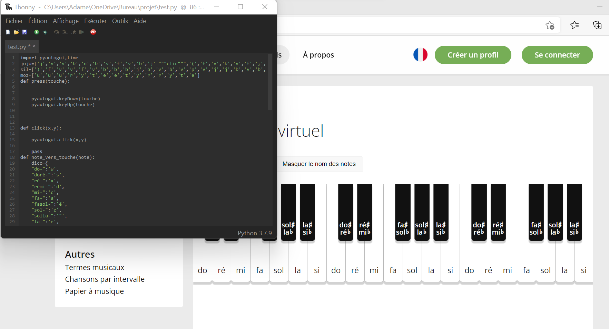
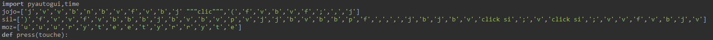
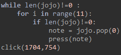

Retour à la page 1 : Page n°1
Evidemment, il faut que le programme ait un lien avec le site, sinon le programme coulerait à l'eau. Nous allons procéder à ça d'une petite manière.
Au tout début du programme, on va donc écrire :
click(1097,512)
Ce clique va nous permettre de nous retrouver sur le site Musicca, et donc les morceuax vont alors jouer.
Pour bien que le programme fonctionne, il faut ouvrir le programme, le mettre dans un coin de l'écran, puis mettre la page en fond du site.
Prestation à faire avant de lancer le programme:
Une fois les fonctions terminés, il reste plus qu'à inclure le morceau dans le programme. Le morceau sera une liste, "jojo" ci-dessous, et cette liste sera remplie de string, string qui seront les touches pour intéragir avec le piano
Liste des touches de musiques pour chaque chanson Grâce a ces listes on va pouvoir du coup les inclure dans la fonction :
Alors le programme se jouera et "jojo", "silhouette" et un petit passage de Mozart sera sur le site Musicca.com